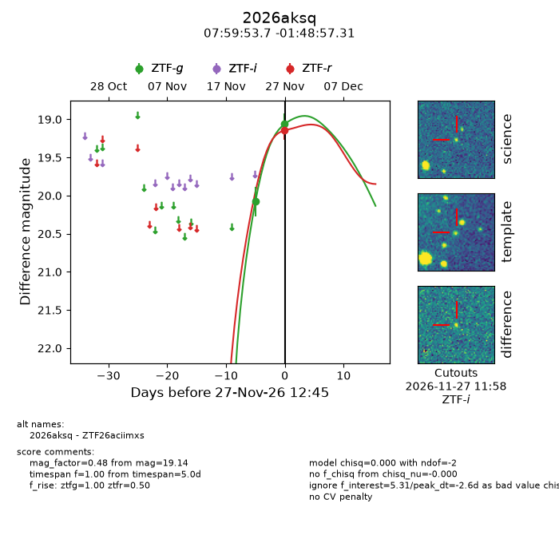
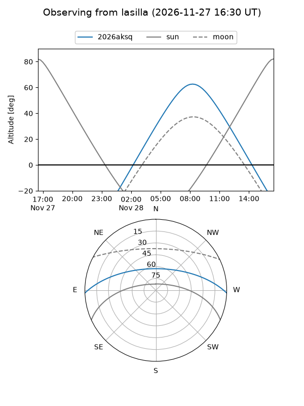
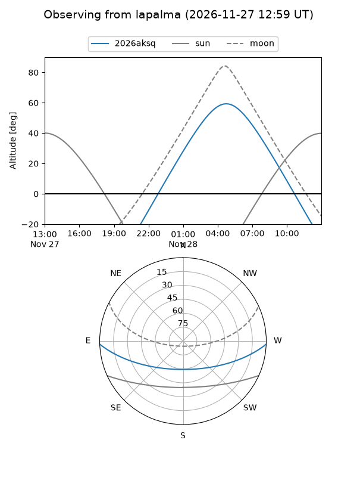
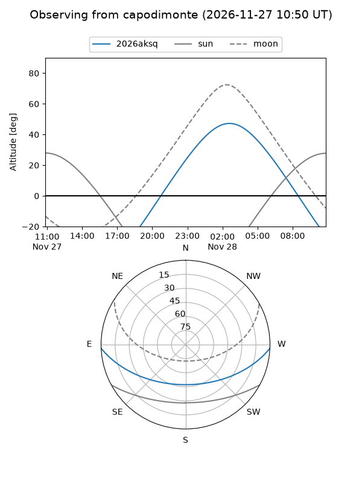
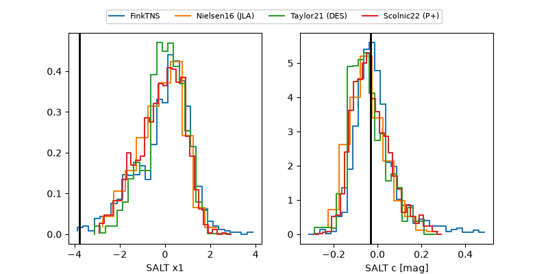

2026aksq
Target 2026aksq at 2026-11-27 12:46
Aliases and brokers:
FINK-ZTF: ztf.fink-portal.org/ZTF26aciimxs
Lasair-ZTF: lasair-ztf.lsst.ac.uk/objects/ZTF26aciimxs
ALeRCE-ZTF: alerce.online/object/ZTF26aciimxs
YSE-PZ: ziggy.ucolick.org/yse/transient_detail/2026aksq
TNS name: wis-tns.org/object/2026aksq
Direct TNS query: direct search
alt names
ZTF26aciimxs (ztf,fink_ztf)
2026aksq (tns,yse)
Coordinates:
equatorial (ra, dec) = 119.9736,-1.81592
equatorial (HMS+DMS) = 07:59:53.67,-01:48:57.31
galactic (l, b) = (222.5758,+14.31906)
Flags:
peak dt: -2.6
Photometry:
last ztfg=19.06, ztfr=19.14
2 ztfg, 1 ztfr detections
Lightcurve

Visibility



Additional plots
